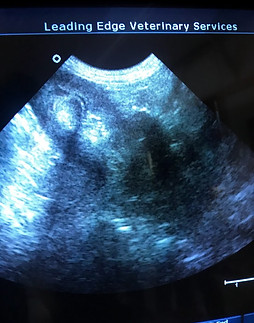

diagnostic care
Leading Edge Veterinary Services
Leading Edge Veterinary Clinic is committed to remaining up to date on the technology in the veterinary field.
Our clinical team has the ability to efficiently and accurately provide a diagnosis with an in-house laboratory and advanced imaging like digital radiology and ultrasound.

On-Site Laboratory
Having a diagnostic laboratory on-site elevates the level of care we are able to provide your pet, as we are able to give you answers sooner about your pet’s health status. For sick or injured pets, this means treatment and recovery can happen as soon as possible.
Tests commonly performed include: fecal tests, urinalysis, fungal cultures, skin scrapings, blood work, blood chemistry, blood counts, testing for common tick diseases, 4-Dx (heartworm, Lyme disease, anaplasmosis, ehrlichiosis), FeLV/FIV (feline leukemia/feline immunodeficiency virus, and more.
Wellness Blood Screens
Bloodwork is an important component of the preventative care we provide at Leading Edge Veterinary Services. It gives our clinical team a look at your pet’s internal processes that cannot be seen with the naked eye alone during a routine physical exam. Our professional recommendation is to complete your pet’s bloodwork during their annual physical exam. This is the most convenient option.
Bloodwork provides our clinical team with a baseline of health that can be referenced through each stage of a pet’s life. This is hugely important because pets oftentimes hide signs of a medical concern until the condition is advanced. If your pet’s bloodwork deviates from his or her baseline of health, we can address the area of concern and begin treatment during early stages, and sometimes before the presence of symptoms. This keeps your pet as healthy as possible and protects against preventable age-related conditions.
Our wellness blood screens are comprehensive, preventative, and highly beneficial to pets of all ages. Here’s how:
Complete Blood Count (CBC) looks at red blood cells, white blood cells, and platelets, to reveal how well the immune system is functioning, and if any infection or inflammation is present. This helps us diagnose serious health concerns like anemia, clotting issues, cancer, and inflammatory diseases.
Chemistry Panels check kidney values, liver values, protein levels, and glucose levels in the blood, which helps us determine organ health and identify potential diseases.
Advanced Imaging
Physical examinations assess what’s visible on the outside, while bloodwork provides comprehensive information about internal systems. Advanced imaging gives us the ability to see your pet’s internal systems with clear, in-depth, and high-resolution images.
Digital Radiology provides instantaneous high-resolution digital images of patients’ bones, organs, and blood vessels. This pin points specific areas of the body that are of concern for the most accurate diagnoses.
Ultrasound employs pulses of sound waves to examine soft tissues and specific internal organs. This advanced imaging technique is non-invasive and painless to patients, and assists us in the diagnosis of abdominal masses, intestinal disorders, heart abnormalities, foreign body ingestion, pregnancy, and cancer.